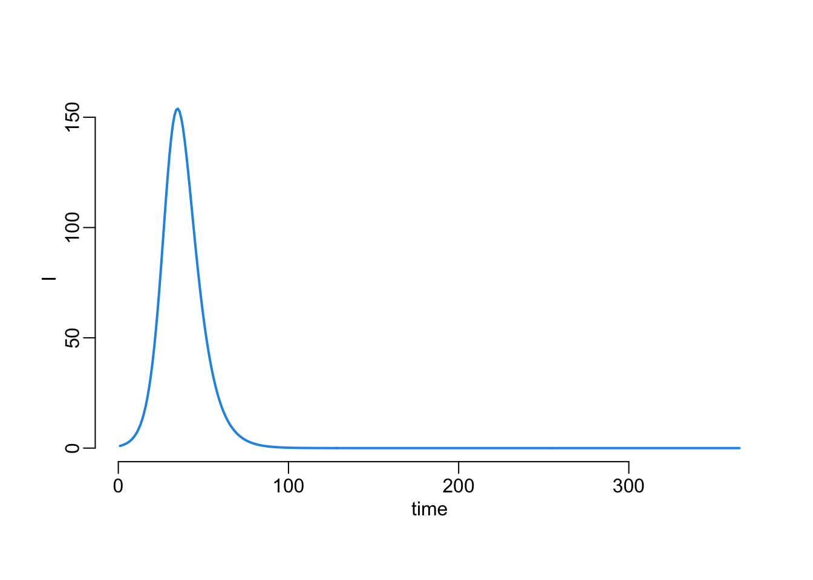
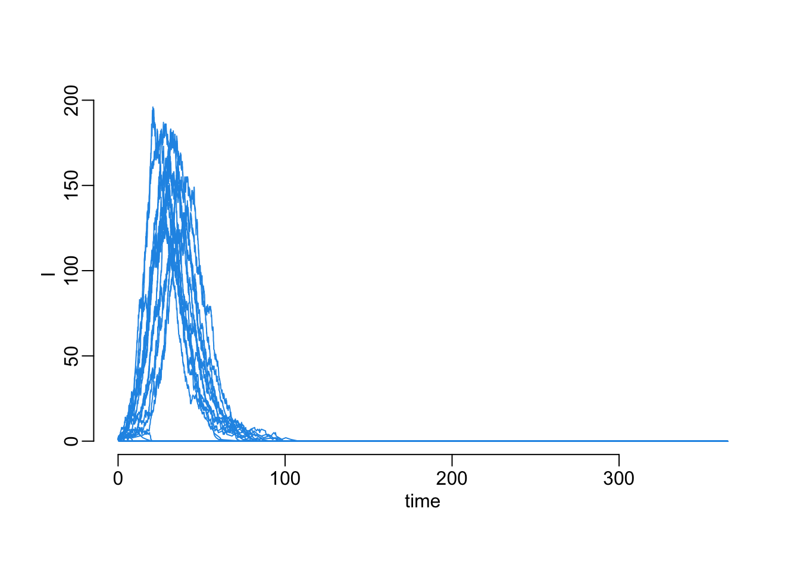
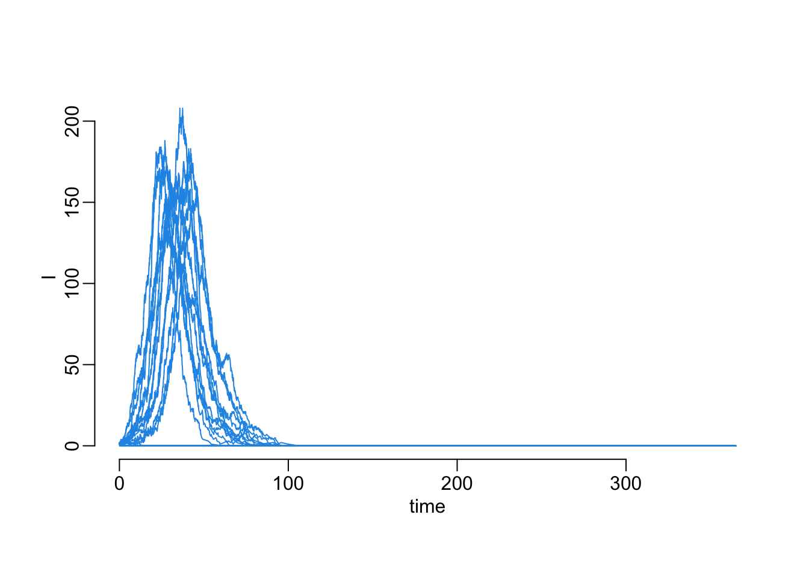
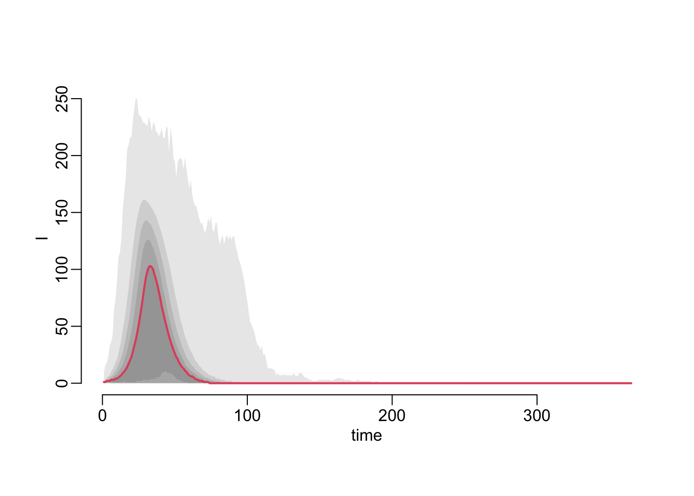

required <- c("adaptivetau",
"deSolve",
"magrittr",
"parallel",
"purrr",
"tibble")
to_install <- required[! required %in% row.names(installed.packages())]
if (length(to_install)) install.packages(to_install)Simulations
Packages
Functions
plot_line <- function(..., lwd = 2, col = 4) {
plot(..., type = "l", lwd = lwd, col = col)
}max_var <- function(x, var) {
max(unlist(purrr::map(x, magrittr::extract2, var)))
}mplot1 <- function(x, col = 4, ...) {
plot(NA, xlab = "time", ylab = "I",
xlim = c(0, max_var(x, "time")),
ylim = c(0, max_var(x, "I")))
purrr::walk(x, \(y) with(y, lines(time, I, col = col, ...)))
}mclapply2 <- function(...) {
parallel::mclapply(..., mc.cores = parallel::detectCores() - 1)
}I_at_t <- function(x, times) {
purrr::map_dbl(times, \(t) x$I[tail(which(x$time < t), 1)])
}make_quantiles <- function(x, times, probs, f = purrr::map, ...) {
x |>
f(I_at_t, times) |>
as.data.frame() |>
apply(1, quantile, probs, ...) |>
t() |>
as.data.frame()
}polygon2 <- function(x, y1, y2, ...) {
polygon(c(x, rev(x)), c(y1, rev(y2)), border = NA, ...)
}mplot2 <- function(x, probs, times, col1, col2, f = purrr::map, ...) {
a <- make_quantiles(x, times, probs, f)
n <- length(probs)
b <- n / 2
m <- floor(b)
plot(NA, xlab = "time", ylab = "I",
xlim = c(0, max_var(x, "time")),
ylim = c(0, max_var(x, "I")))
purrr::walk(1:m,
\(x) polygon2(times, a[, x], a[, n + 1 - x], col = col1))
if (b %% 2) lines(times, a[, m + 1], col = col2, ...)
}Continuous time deterministic
The numerical solver of the ODE version of an SIR model:
cont_det <- function(N, I, R, R0, gamma, times) {
deSolve::ode(
c(S = N - I - R,
I = I,
R = R),
times,
function(time, variables, parameters) {
with(as.list(c(variables, parameters)), {
incidence <- beta * I * S
recovered <- gamma * I
list(c(-incidence, # dS/dt
incidence - recovered, # dI/dt
recovered))})}, # dR/dt
c(beta = R0 * gamma / N,
gamma = gamma)
) |>
unclass() |>
tibble::as_tibble()
}Let’s numerically solve:
cont_det_sim <- cont_det(N = 1000, I = 1, R = 0, R0 = 2, gamma = .2, times = 1:365)Let’s visualize this the epicurve from this simulation:
with(cont_det_sim, plot_line(time, I))
Continuous time stochastic
The simulator:
cont_sto1 <- function(N, I, R, R0, gamma, times) {
adaptivetau::ssa.exact(
c(S = N - I - R,
I = I,
R = R),
list(
c(S = -1, I = +1), # transmission
c(I = -1, R = +1)), # recovery
function(variables, parameters, time) {
with(as.list(c(variables, parameters)), c(
beta * S * I, # transmission
gamma * I))}, # recovery
c(beta = R0 * gamma / N,
gamma = gamma),
max(times)) |>
tibble::as_tibble()
}Let’s run one simulation:
cont_sto_sim <- cont_sto1(N = 1000, I = 1, R = 0, R0 = 2, gamma = .2, times = 1:365)Let’s run multiple simulations:
cont_sto2 <- function(N, I, R, R0, gamma, times, n) {
replicate(n, cont_sto1(N, I, R, R0, gamma, times), simplify = FALSE)
}cont_sto_sim30 <- cont_sto2(N = 1000, I = 1, R = 0, R0 = 2, gamma = .2, times = 1:365,
n = 30)cont_sto3 <- function(N, I, R, R0, gamma, times, n) {
mclapply2(1:n, function(x) cont_sto1(N, I, R, R0, gamma, times))
}cont_sto_sim10000 <- cont_sto3(N = 1000, I = 1, R = 0, R0 = 2, gamma = .2, times = 1:365,
n = 10000)Visualizing the simulations outputs:
mplot1(cont_sto_sim30)mplot2(cont_sto_sim10000, seq(.1, 1, .1), 1:365, adjustcolor("black", .1), 2, lwd = 2,
f = mclapply2)
Looking at the peak values
cont_sto_sim10000 |>
purrr::map_dbl(~ max(.x$I)) |>
plot(ylab = "peak value", col = 4)
Removing the extinctions:
cont_sto_sim10000ne <- cont_sto_sim10000[purrr::map_dbl(cont_sto_sim10000,
~ max(.x$I)) > 50]length(cont_sto_sim10000ne)[1] 4950Plotting without the extinctions:
mplot2(cont_sto_sim10000ne, seq(.1, 1, .1), 1:365, adjustcolor("black", .1), 2, lwd = 2,
f = mclapply2)
Verifying that we don’t have any identical simulations among those that do not go immediately to extinction:
cont_sto_sim10000ne |>
mclapply2(I_at_t, 1:365) |>
as.data.frame() |>
t() |>
as.data.frame() |>
duplicated() |>
sum()[1] 0